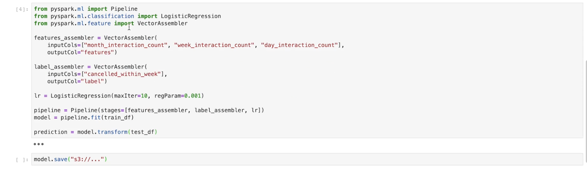

1. Data IngestionData ingestion means that we want to get data into our system so that we can do some sort of analysis on it.Streaming ingestion usually involves things like:ClickstreamChange data captureLive video feeds1.1. Clickstream: Kafka, Kinesis, ZookeeperIt keeps track of what the user interactions are with some particular interface, like a mobile app, or a voice assistant, or a desktop app.Clickstream potentially have to manage millions of events/interactions per secondWhat does the clickstream actually keep track of? In most cases, clickstream is going to have a record per event which keeps track of things like:Datetime of eventUser agent what type of browser User ID (if logged in)Request detailsget/details/<video_id>Session ID especially if they're not logged in use cookies helps tie clickstream entriesIP addressReferrer Google, Facebook, etc.Two tools we can use to sort through these [potentially] millions of records every second:KafkaKinesisNote: Sometimes these tools are referred to as Pub/Sub or Publish/Subscribe.Note: Here, we used clickstream as one example, but essentially it could be anything that has the streaming ingestion aspect of it. Examples of such are web crawlers, RSS feeds, and even another storage (such as a database).1.1.1. KafkaIt's an Apache open source project.It allows us to create brokers and these brokers manage the interactions between some producers (e.g. clickstream logs) and some consumers (storage).Clickstream logs get sent to particular Kafka topics and they have partitions on the broker such that the consumers can consume from these brokers to store these clickstream logs.1.1.2. ZookeeperWhat happens if the clickstream logs come in at a far faster rate than a single broker could handle?In this case, we're going to have broker cluster.Every single clickstream log will be sent to a particular partition and one of the brokers in the broker cluster will be assigned to be the partition leader.All the partition leader does is to make sure that all of the reads and writes go through that particular partition and it also replicates the partition across other brokers in the broker cluster.In order to manage all the brokers [in the broker cluster], Zookeeper handles the management of the leader of this broker cluster such that if one of the brokers is a leader and it goes down, it can then substitute in another broker from the cluster such that it can takes its place.Zookeeper also keeps track of different topics for each configuration.* For instance, if we had clickstreams coming from a home page, that could be one topic, etc.In general, Kafka will give us the scalability aspects such that we can add more and more brokers to the broker cluster to support millions of clickstreams per second.1.1.3. KinesisIt's a fully-managed AWS service.Kinesis has shards instead of partitions, and the number of shards present can scale up.1.2. Change data capture, OLTP and OLAPHow we ingest changes to databases is a process called change data capture.Let's say we have a DB and it's keeping track of who (in terms of user ID) is subscribed to Netflix.So, effectively, a row in this database would be keyed on some user ID and the value would be is this user ID actively subscribed to Netflix? Also, we want to know their removal date.If we want to build a ML model to predict whether someone will renew or not, we care about their current state of their subscription (because they can't cancel if they're already canceled), and we also care about the previous status of their membership, so that we can see when did user X canceled and tie that to some service usage before they canceled.So, here the hypothesis is that maybe their usages have gone down before they decided to cancel.If we wanted to model this, we couldn't just look at that DB because we also need a history to tell us when did they unsubscribed/subscribed. In order to capture that we're going to use a tool called change data capture.It will tap into a log of changes to a particular row in some DB table and will these change logs to the streaming tools (e.g. Kafka, Kinesis).Now, our producers are these different storage instances.Every single time a row in a table is updated, we can look at the change logs associated with these databases and send that information to the broker (e.g. Kafka).Now, the consumers could store these changes such that we could build a ML model.1.2.1. OLTP (Online Transaction Processing)In online transaction processing (OLTP), information systems typically facilitate and manage transaction-oriented applications. This is contrasted with online analytical processing.Some examples of OLTP systems include order entry, retail sales, and financial transaction systems.Note: The term "transaction" can have two different meanings, both of which might apply:In the realm of computers or database transactions it denotes an atomic change of stateIn the realm of business or finance, the term typically denotes an exchange of economic entities.OLTP has also been used to refer to processing in which the system responds immediately to user requests.An ATM (Automated Teller Machine) for a bank is an example of a commercial transaction processing application.OLTP system design: To build an OLTP system, a designer must know that the large number of concurrent users does not interfere with the system's performance. To increase the performance of an OLTP system, a designer must avoid excessive use of indexes and clusters. The following elements are crucial for the performance of OLTP systems:Rollback segments: Rollback segments are the portions of database that record the actions of transactions in the event that a transaction is rolled back. Rollback segments provide read consistency, rollback transactions, and recovery of the database.Clusters: A cluster is a schema that contains one or more tables that have one or more columns in common. Clustering tables in a database improves the performance of join operations.Discrete transactions: A discrete transaction defers all change to the data until the transaction is committed. It can improve the performance of short, non-distributed transactions.Block size: The data block size should be a multiple of the operating system's block size within the maximum limit to avoid unnecessary I/O.Buffer cache size: SQL statements should be tuned to use the database buffer cache to avoid unnecessary resource consumption.Dynamic allocation: of space to tables and rollback segments.Transaction processing: monitors and the multi-threaded server. A transaction processing monitor is used for coordination of services. It is like an operating system and does the coordination at a high level of granularity and can span multiple computing devices.Partition (database): Partition use increases performance for sites that have regular transactions while still maintaining availability and security.Database tuning: With database tuning, an OLTP system can maximize its performance as efficiently and rapidly as possible.1.2.2. OLAP (Online Analytical Processing)OLAP is an approach to answer multi-dimensional analytical (MDA) queries swiftly in computing.Typical applications of OLAP include business reporting for sales, marketing, management reporting, business process management (BPM),[3] budgeting and forecasting, financial reporting and similar areas, with new applications emerging, such as agriculture.OLAP consists of three basic analytical operations: consolidation (roll-up): involves the aggregation of data that can be accumulated and computed in one or more dimensions.* For example, all sales offices are rolled up to the sales department or sales division to anticipate sales trends.drill-down: is a technique that allows users to navigate through the details. * For instance, users can view the sales by individual products that make up a region's sales.slicing and dicing: is a feature whereby users can take out (slicing) a specific set of data of the OLAP cube and view (dicing) the slices from different viewpoints.* These viewpoints are sometimes called dimensions (such as looking at the same sales by salesperson, or by date, or by customer, or by product, or by region, etc.).Note: Databases configured for OLAP use a multidimensional data model, allowing for complex analytical and ad hoc queries with a rapid execution time.At the core of any OLAP system is an OLAP cube (also called a 'multidimensional cube' or a hypercube). It consists of numeric facts called measures that are categorized by dimensions.The measures are placed at the intersections of the hypercube, which is spanned by the dimensions as a vector space. The usual interface to manipulate an OLAP cube is a matrix interface, like Pivot tables in a spreadsheet program, which performs projection operations along the dimensions, such as aggregation or averaging.Note: The cube metadata is typically created from a star schema or snowflake schema or fact constellation of tables in a relational database. Measures are derived from the records in the fact table and dimensions are derived from the dimension tables.Each measure can be thought of as having a set of labels, or meta-data associated with it. A dimension is what describes these labels; it provides information about the measure.1.2.3. OLTP vs. OLAPOLTP vs. OLAP:OLTP is typically contrasted to OLAP (online analytical processing), which is generally characterized by much more complex queries, in a smaller volume, for the purpose of business intelligence or reporting rather than to process transactions.Whereas OLTP systems process all kinds of queries (read, insert, update and delete), OLAP is generally optimized for read only and might not even support other kinds of queries. OLTP also operates differently from batch processing and grid computing.An OLTP system keeps track of who was actively subscribed (referring to the example above) such that if you log in, we know to grant you some particular membership benefit.An OLAP system keeps track of when you subscribed or when you unsubscribed.1.3. Live video, HLSLive video could mean ingesting video content from traffic cameras, security cameras, or video streaming services.An example is HLSHTTP Live Streaming.It takes an mp4, chops it up into segments, and sends out those segments over HTTP.HLS plays videos encoded with H.264 compressionAAC encoded sounds.How does this look in terms of producer-broker-consumer paradigm?The camera feeds will be sent to some collector. * The collector layer is needed to disassemble the video into some frame by frame representation and ship them to the broker.* The layer could also compress the frames to save cost of transporting it over to the broker.1.4. Batch IngestionBatch ingestion can take place when we want a periodic snapshot of some database.It is also useful as a first step for when we want to onboard a DB before we use change data capture on it.This allows our storage system to be fully up-to-date with the DB contents, before we start keeping track of all the changes to that particular DB.The technologies that we can use to transfer the data to some particular DB instance into some storage layer that we want to use for analytics:MySQLmysqldumpCassandraCQL copyMongoDBmongoexportNote: This is very similar to change data capture, except that we're not waiting for a change anymore. We're simply dumping all of data in the DB into storage.The considerations that we need to take when we're talking about ingestion:Size of individual dataRate at which data comes inSupport of data types (changing data types)High availability (Multi-AZ) and fault tolerance1.4.1. Basic exampleHere is basic example of clickstream.First, we check out the Zookeeper properties config/zookeeper.properties
Figure 1:Zookeeper default config by Apache
Next, we can launch it bin/zookeeper-server-start.sh config/zookeeper.propertiesNote: This comes default with Kafka.Next, we have to launch the Kafka broker. This, as well, has its own properties file
Figure 2:Kafka default properties
Now, let's launch the Kafka broker bin/kafka-server-start.sh config/server.propertiesNote: In production, we would actually spin up several Zookeeper instances and several brokers. We also need to set up a producer. For this example, we're creating a simple web app which will have a clickstream being produced from it, and then send it to the Kafka broker to be later consumed. Here's a simple server file:Note: The 'mlexport' in the PRODUCER.send() is the broker topic. The topic needs to be created ahead of time so that we can reference it here.We can create a simple Kafka consumer (which will just print results to the terminal) just to make sure that when we submit from web app, the message is actually being sent to Kafka broker bin/kafka-console-consumer.sh --topic mlexport --bootstrap-server localhost:9092 --zookeeper localhost:2181Back to Top
2. Data StorageIn section ? we talked about producers and brokers. In this section, we're going to discuss the "storage" layer (or consumers).Let's say that we have single machine which has four HDDs (Hard Disk Drives).Each of these drives can read and write at 100 MBs.Let's say we have 1TB of data to distribute equally (in parallel) across all four HDDs This would take about 40 minutes for one terabyte to get written/read from the entire computer.Additionally, since we're just dealing with one host, there would be no replication.* Anything happens to the host, the data is gone.Let's say instead of having one machine we had 10 machines.Everything else equal, it would take about 15 minutes to read/write one terabyte.In addition, now we can replicate the data across the same cluster of hosts.2.1. Hadoop Distributed File System (HDFS)In HDFS, there are data nodes associated with it.These data nodes exist on machines that actually store the data.You also have name node in HDFS, which keeps track of which data is on which data node.A user would use a HDFS client to work with their files.The HDFS client would partition the files into smaller blocks.It would then send a request to the name node to store the partitions in data nodes.Name node respond to HDFS client with data nodes it can use to store the file partitions.HDFS client stores multiple copies of the file partition in different data nodes in order to replicate the data.Now, we have our file saved in the Hadoop distributed file system.HDFS ClientfileABCData NodeData NodeData NodeData NodeName NodefileA=1,2,3B=1,3,4C=2,3,41234The retrieve a file, the HDFS client would get the partition data node mapping from the name node.The good thing about HDFS is that it's very scalable.One of the problems of HDFS is that the name node is a single point of failure.What we can do is to have two name nodes, running at the same, one in the active state and the other in the passive state. In case one of them is down, we'll use the other one This particular configuration is called "Hot Standby".By doing so, it can achieve high availability.In order to always keep the active and passive nodes in sync, all the stuff in the active node is written into a journal node cluster and then read by the passive node.What if a data node fails?In order to discover when a data node is inactive, we can use the name node to perform heartbeat calls to all of the known data nodes.* A heartbeat is just a call to the particular data nodes such that they must respond "yes, I'm healthy"If a particular data node doesn't respond to the heartbeat after some number of tries, then the name node will just replicate that data node's data to other nodes in the cluster.2.1.1. Zookeeper clusterIn the case that the name node that's currently active gets isolated due to some network failure, it will still believe that it's active and could come online soon, but instead we want to promote the passive name node to be the active.We have to make sure that only one name node is active at a time To do that, we use Zookeeper cluster.Zookeeper will manage different heartbeat connections between each of the active and the passive nodes and with some additional tools, it will ensure that only one name node is active at a time.Note: Hadoop 3.x doesn't actually replicate the data in its entirety. It uses Erasure Coding.Imagine we have this bit expression 1011=1Parity bit.If we remove one of the elements (e.g. 1011=1),in our case, data that has gone missing in one of the data nodes, we can XOR all the other data that hasn't been lost along with the parity bit If we XOR those, we can retrieve the data that was lost This is a more efficient way of replicating data.Note: The example above is actually pretty inefficient when it comes to erasure coding The algorithm used in HDFS 3.x is Reed-Solomon Encoding.2.2. Kafka transactionsHow do we make sure that only a single instance of an event/record ends up in storage when all of these systems (i.e. producers, brokers, consumers) could fail in some way?Kafka transaction effectively assigns a transactional ID to each record that's being sent to a broker and there's a particular process that's followed with all the transactional IDs that are received such that we can guarantee that once a message is committed to a broker, that same message won't be committed again.Kafka transactions can be somewhat cumbersome to work with Kafka Streams API can simplify that.2.3. Kafka Connector SinkThis connector connects the broker and the consumer together, and specifically, they created an HDFS sink that allows us to achieve that exactly once delivery guarantee.Note:Combining Kafka transactions (producer broker) and Kafka Connector Sink (broker consumer), we make sure that our storage layer doesn't contain any duplicated messages.2.4. Storage FormatsHow do messages get stored in the HDFS storage layer?2.4.1. AvroIt's row-oriented which means that if we have a table, Avro would represent it per each row.This is good for queries which need all columns.It's also good for heavy write load.Avro supports a lot of schema evolution/change. 2.4.2. ParquetParquet represents the same table in the column-oriented way.It's good for queries which only needs some of the columns.It's good for heavy read loads.It's good for sparse data in the sense that if the entire column has sparse data, then we can just skip ahead to the following column.We can also compress those column values that are similar.However, the schema evolution support is pretty limited.2.5. Implementation exampleIn order to get HDFS Sink working, we need to configure it through Kafka. $ vim config/quickstart-hdfs.propertiesNote: Parameter value.converter indicates that we'll be writing JSON to HDFS for now This is just for readability. You can put Avro/Parquet here.Note: We have to know the topic in which the sink connector should listen (e.g. mlexpert)Note: Parameter hdfs.url indicates the sink destination to write the clickstream records that it obtains by listening to the mlexpert topic.* Here, the destination is the master node of our Hadoop cluster at port 8020.Now, we start the connector $ bin/connect-standalone.sh config/connect-standalone.properties config/quickstart-hdfs.propertiesWe can go to Hadoop cluster name node in order to observe and monitor how records are being stored.Back to Top
3. Data Processing3.1. Basic ExampleLet's say we wanted to predict whether or not someone would cancel their subscription.Let's say that the search functionality that we have on our Flask app, ?, is behind a particular paywall.For instance, Netflix requires that you have a subscription to use their app, and that search functionality within their app is embedded behind that paywall Let's say that our app is similar we have a home page that may/may not have recommendations on it and then there's a search functionality as well where you can search for some particular content.With this set up, now we have all these messages from our clickstream logs indicating what did people search or what did they click on our next job is to aggregate these different clickstream records in order to create features for our model which will predict whether or not users will cancel.Message ProcessingAggregationJoinTransformationTo start, this aggregation would involve counting number of searches per user.Why this is a useful feature? If we see someone is searching a lot, then we're able to see that this person is using the product a lot. If users are not searching as much, this could indicate that they may soon cancel This is our hypothesis At least we need to build features in the model to determine if our hypothesis is correct.We'll aggregate how many searches each user does and then we'll combine that from different clickstream events (e.g. recommendations user interacted with).We may want to perform some sort of transformation on the records/messages that are present in our HDFS layer.For example, nth month of year instead of date.How do we plan on processing (message processing) these data?One idea is that we could just have a compute resource We'll send these messages to some processor (to process it, i.e. apply transformation) Then we send the processed message back to the data node We get another message to be processed.There's a problem with this approach.* Let's say that we get about 50,000 requests per second to our clickstream.* So, our HDFS will incur 50,000 new records every second.* Let's say we want to train a model on three months worth of that data.* That would take about 4 hours just to transport all of that data to the processor.* When it gets to the processor, we have to process the messages.* If we assume that every message can be processed in 10 nano seconds, then even with two cores, it will take 45 minutes of processing.* The whole process will take about 10 hours just to analyze the last three months of data.How do we fix this?* One idea is to use a cluster of computes. The problem with that is we won't know which processor is doing which process, and at what stage of processing they are. Also, we can't parallelize the transformation and the join because transformation has to be done before the join.3.2. Main RequirementsRequirementsA cluster resource management (CPU, RAM)Computational dependency management (locality)Manage saving final results to HDFSBonus: Share same HDFS cluster3.3. Apache YARN: Managing ResourcesYARN Yet Another Resource NegotiatorYARN has a few components:Resource Manager(per cluster)* Scheduler It's a sub-component of Resource Manager allocates cluster resources to whatever applications need it.* Application Manager (AM) Accepts jobs to be run on a particular cluster.Node Manager (per node) It negotiates with the Resource Manager for resources requested by an Application Master.* It also reports resource usage to the Resource Manager such that the Resource Manager knows whether or not to assign more work to that particular node.* Application Master It negotiates with the Scheduler and the Resource Manager for more containers or more compute powers.* Containers They're just an abstraction representing some RAM, CPU or disk.Resource ManagerNode ManagerNode ManagerAMcontainercontainersubmit a job1start a container (AM)2request resource3start container44Userget status5de-register6cleanupcleanup77Apache YARN: sequence of processesWhat does Apache YARN do for us?When we group many nodes together, we can think of their CPU, or RAM as being one of a giant computer, and YARN will help manage the resources such that we can assign multiple instances of work to that cluster.3.4. Apache Spark: LocalityUnfortunately, we still didn't gain computational dependency management.Basically, what we want is the ability to write code in one place and have some tool/software organize those instructions to be highly optimized and parallelized when possible. Effectively, we want the user to be able to consider the entire cluster to be a single computer such that they don't have to write any specialized code to be run across the cluster.Apache Spark's components:Driver* Converts the user's code to a set of tasks. Task is the smallest unit of work that Spark recognizes. * Schedules these units of tasks across different Executors. Executors execute the codes.* Effectively, the Driver makes sure that the submitted code is optimized to be run in a distributed cluster.* It does that by compiling the code into RDD DAG.* RDDResilient, Distributed Dataset unit of data* DAGDirected Acyclic Graph Schedules the task with DAG Scheduler (stages)DAG Scheduler makes sure that each step are run in the proper order.* Each stage has a series of tasks associated with that stage That's done by the Task Scheduler.* After the Driver creates the tasks and DAG Schedulers (stages), it will distribute these tasks out to Executors which return to the Driver the results of that DAG.Cluster Manager* Spark's cluster manager is YARN. * It uses YARN to schedule jobs submitted to the cluster.Executor* It runs the task and returns the result to the Driver.How does Apache Spark fit into Apache YARN?The Driver is mapped to the Application Master.The Executors are just inside the containers.Resource ManagerNode ManagerAM/Drivercontainer/ExecutorNode Managercontainer/ExecutorApache Spark on YARNNote: Since both YARN and Spark are on HDFS cluster, so that we don't have to move data to anywhere else It can be all done locally on the same cluster.Now, with these tools, we can check all the requirement boxes (?):
Cluster resource management (CPU, RAM)
Computational dependency management (locality)
Manage saving final results to HDFS
Bonus: Share same HDFS cluster3.5. AvailabilityAs always, we have to think in terms of high availability and fault tolerance.The single point of failure is the Resource Manager.We'd like some Zookeeper instance running which will keep track of an active/passive Resource Manager, and the passive Resource Manager can be set into a hot standby mode.3.6. Example3.6.1. On Hadoop clusterFirst, we SSH into the name node of the HDFS cluster.Here, we used Elastic MapReduce (EMR) to set up this cluster.Now, we want to run some Spark code on our Hadoop cluster. Here's a simple code (in pySpark) that we wish to run.Note: If you're more familiar with SQL, you can write SQL-like codes using Spark's SQLContext.
from pyspark.sql import SQLContextsqlContext = SQLContext(sc)df.registerTempTable("df")sqlContext.sql("SELECT COUNT(DISTINCT user_id) FROM df").show()
We can run this file by running this command (spark-submit command already exist in the Hadoop cluster):
/bin/./spark-submit pyspark_example.py
Note: The problem with the terminal UI is that it's hard to be interactive with it We could use the pySpark interactive interpreter. We just run the pyspark command in the command line This will spin up a little instance where we can write and run (line by line, like in IPython) Spark codes in.The interpreter sets up the SparkSession automatically so, we don't need to initialize it.3.6.2. On Jupyter notebookWe could also use Jupyter Notebooks to run spark codes. It allows us to initialize a pySpark session in the same way that we did when we SSH'd into the name node of the Hadoop cluster.Here, the notebook is running on a separate instance outside of the cluster and it's allowing us to contact the cluster in order to submit jobs to it.The glue between the machine that runs the notebook and the cluster is called Livy. It provides an API to submit Spark jobs outside of the cluster itself.Like the Spark interpreter, the notebook also initialize a Spark session automatically.3.6.3. Spark History ServerSpark History Server lists all the Spark apps with each app gets their own ID.When you click on each app, it'll show the completed jobs (under that particular instance).We can also look at the stages associated with that job We can also see the DAG visualization and many more things (see figures below).
4. Processing OrchestrationThe processes we discussed in previous sections, generally, we don't want to do them only one time For instance, we may have to repeat them every 24 hrs.The problem is that we don't want to run all different jobs manually every time.It'd also be nice to handle data dependencies automatically as well. * Whatever that should happen serially, happens in order and whatever that be done at the same time, get done in parallel.Finally, we want to be able to scale up i.e. managing potentially thousands of scheduled jobs.4.1. Apache AirflowWe're going to use Apache Airflow to solve all the problems mentioned above.Airflow uses the concept of DAG to manage jobs.get_data_Aget_data_Bjoin_A_Bget_data_Cjoin_A_B_C4.1.1. Apache Airflow: Web ServerIn order to show all of these DAGs and the previous runs of DAGs, Airflow offers a web server.It's actually a Flask app that let users to trigger DAGs.It also allows to browse DAG history (stored in DB).4.1.2. Apache Airflow: SchedulerThe scheduler:Monitors DBs to check task statesFetch DAGs from DAG storeSend DAG to execution queueWrites DAG runs into DB for history4.1.3. Apache Airflow: WorkerThe Worker:Pulls the task queueRuns the tasksStores task state to the DB (so the Scheduler is aware of its progress).4.2. Airflow ProcesswebserverschedulerqueueDAG storeApache Airflow1. user triggers DAG2. fetch the DAGtypically a S3, or some distributed file store3. schedule the DAGworkerworkerworker4. enqueue tasks (in parallel/serial)5. get tasks6. do the tasksPostgreSQL8. check (periodically) if task compeletedThis allows the scheduler to know when a task is completed so that it can schedule the subsequenct tasks that had dependencies.7. task completedIf task completed then it schedules more tasksOnce all the tasks are completed, scheduler adds DAGs' history to the DB9. Add DAG history10. pull DAG status11. DAG is completed4.3. Airflow technologiesThe workers are implemented through a Celery worker. Celery ensures that if one of the workers goes offline (such as the host itself going down or host losing network connection), Celery will quickly adapt and assign tasks to other new workers to come and take its place.The queue is typically fronted by Rabbit MQ. It supports a cluster of queues so that we can scale up the number of queues if the scheduler has a very high load to be scheduled and it allows the queue to have a high availability. The scheduler is typically the single point of failure for Airflow. In older versions, we would need an active/passive hot standby situation.In more recent versions, they support concurrency amongst the schedulers This means that you can have many schedulers running at the same time. It'll ensure that tasks don't get scheduled twice by mistake. For database, we need to have an active/passive hot standby as well.DAG store is typically in a distributed file store (e.g. S3). The webserver is typically going to consist of multiple instances behind some load balancers, such that if a single instance goes down, we can still schedule and view our DAGs because there's more than one host.4.4. Airflow in actionThis is the Airflow webserver UI:In this example, it shows that an instance (mlexpert_dag) is already running.This means that there is an S3 (if on AWS) bucket with mlexpert_dag's file in it.Both AWS and Google offer a fully managed Airflow service.If we click on mlexpert_dag, we can see the DAG:If you go the code tab, it'll pull up the exact code that's backing this DAG:Note: The DAG is imported from the airflow library. The lines 17-23 shows how to define a DAG.The next lines (25-44), shows how we can add tasks through SSHOperator to the DAG.Note: The worker t1 would execute the commend argument "spark-submit s3://bucket_name/aggregate_search_interaction.py <DATE>" in the worker of the Airflow instance that we have. The worker would send to the name node of the Hadoop cluster. The name node of the Hadoop cluster would be the one to actually run this file (the *.py file) itself.Line 46 shows how we can arrange the tasks. In this case, it says that task 1, 2 can be done in parallel, and once they're done task 3 can be run.We can see the graph representation of it in the Graph View tab.Back to Top
5. WorkspacesAfter getting the data, we need an environment where we could explore our data and ML models.For instance, we'd like to explore:Data Completeness stability (data today is similar to data from, say, a year ago), availability, free of bias (positive feedback loop).Pretrained models Transfer learning (embedding layers)ExplainabilityShapleyValues, Lime, DeepLiftModel types Layered, ensemble, AutoMLFeature importanceIn addition to exploration, we'd also like to:Leverage our team resources:* Team packages* Direct collaborationManage environment:* Individualized exploration (i.e. individualized environment)* Production-ready for serving predictionsHave HDFS and Spark accessHave asynchronous support:* Training, hyperparameter tuning, evaluationHave data access governance:* Protected dataThe tools out there (at the time of writing this, late 2022) are mostly:Jupyter Hub:* Amazon SageMaker Studio* Google Colab* Azure ML WorkspaceBack to Top
6. Frequentist A/B TestingThe idea here is that we start with a hypothesis. Replace user experience with anotherThe hypothesis allows us to describe how we're going to replace a one user experience with another and how a user will react to those new experiences.For instance, if we have a recommendation algorithm which just recommends the most popular piece of content and we want to introduce some degree of personalization with a ML model. This typically involves a UI change to reflect the new experience.However, it can be not so apparent to users such as demand forecasting forecasting the traffic on a content and doing the due diligence in terms of hardware and networking to handle the traffic. The opposite, not being able to handle the traffic well, would be very noticeable to the users.Dependent variable selectionAfter deciding on what new user experience we want to test, we also have to decide on what the dependent variables should be. Some examples of dependent variables could be:Incremental profit/revenueNumber/rate/probability of ads clickedListening/screen timeDirectionality of dependent variablesWe'd also want to talk about the directionality of these dependent variables.We want to be very specific in which way these dependent variables will move.We want to anticipate multiple changes as well If we make an assumption revenue will go up, we need to make an assumption what will happen to profit.Experiment participantsWe want to decide who will actually participate in the experiment.A template of a hypothesis could look like this a"If we replace X with Y for some set of users then [a,b,c,...] will go [up/down]and [invariants] won't change."6.1. A/B TestingA/B testing usually consists of some control group in which the experience is unchanged. We compare the users' reactions in the control group to a treatment group which has received the new experience.If we see a significant (desired) change in the test group compared to the control group, then we determine if the treatment experience should replace the control experience.6.2. Frequentist approach to A/B testingBaselineFor doing the frequentist approach, we need to have a baseline.The baseline is what the current control experience offers in terms of some metric that we care about (e.g. click through rate).Minimum detectable changeIt's the smallest effect that can be measured e.g. 1% in CTRWe need to be able to beat the baseline by some amount (i.e. minimum detectable change) to cover the cost of our experiment That's why it's also called practical significance boundrybecause if we get anything lower than that, then it's practically not worth it.PowerPower is the percent of the time that the minimum detectable change is found assuming that it exists.Power is usually represented by (1-) it's often (1-0.8). SignificanceIt's the percent of the time that the minimum detectable change is found assuming that it doesn't exist.This is often represented as it's often 0.5.Sample sizeThe sample size will tell us how big each group (control and treatment) need to be in order to measure some significance or power.Here's the equation to get the sample sizen=(z22p1(1-p2)+zp1(1-p1)+p2(1-p2))2
|p2-p1|2p1 baseline p2 baseline + minimum detectable changeNote: In our case, since we only want to measure a lift and not a total change, we only need a one-tailed z-score, hence z2.6.2.1. Null HypothesisThis is the case in which our hypothesis is incorrect such that there's no difference between control and treatment.We either reject/fail to reject the null hypothesis with failing to reject the null hypothesis means we're accepting there's not a significant difference between control and treatment (i.e. accepting the null hypothesis).6.2.2. p-valueWhat does the significant difference between control and treatment group mean?We're running the experiments on a sample of population so, we have to treat every measurement with uncertainty.A better way to ask is How likely would certain percent of change have been given the null hypothesis is true?In frequentist approach, we find answer to this question by finding the probability of seeing that percent change by random change if we were to run the experiment many times.We use a p-value to answer that question for us.The p-value is the probability of seeing the result or a more extreme result by random chance if we were to run experiment many times.Typically, we work with p-value of 0.05 i.e. if we run the experiment 100 times, only in 5 of the experiments we'll the result (or a more extreme result).6.2.3. How to measure the p-value?Let's say we have the following example:a
CTP
no. of users (N)
Control (c):
7%
1062
Treatment (t):
8%
982
First, we calculate the r value as follows,r=CTPcNc+CTPtNt
Nc+Nt= 7.48%Now, we calculate the z value as follows,z=CTPt-CTPc
r(1-r).(1
Nc+1
Nt)=0.858If we take the z value and look it up in the one-tailed z-score table, we'll see that we get a value of 0.1949 which is > 0.05 we fail to reject the null hypothesis.If we have 10 times the number of users in each group, then we would've got a value of 0.004 and would be able to reject the null hypothesis.6.2.4. Confidence intervalsAs well as p-values, we'd also want confidence intervals surrounding the CTP probabilities in the above example.The reason is that these probabilities came from a sample of population, we can't say with 100% confidence that these are the exact values.To calculate the confidence interval, we take our CTP probabilities and calculate the CI as follows, CTP - z95%CTP(1-CTP)
nNote: Since we're only concerned with lifts in the CTP and not necessarily just a change, we're only going to concern ourselves with the lower bound. z95% is the one-tailed z-score at 95%.Here's the CI for the example abovea
CTP
no. of users (N)
CI
Control (c):
7%
1062
5.72%
(-1.28%)
Treatment (t):
8%
982
6.58%
(-1.42%)
The lower bound CI means is that if we were to run this same experiment 100 times, about 95 of those cases (95%) would result in the CTP of at least these values.6.3. A/A testThis is when you have a control and a treatment group but they both receive the same experience.This is a great way to test your A/B testing framework, because there shouldn't be statistically significant differences between the two groups.This can verify our A/B testing tool by checking for:Sample biasIncorrect analysis process (e.g. our random assignment function is not actually random)A/A testing is also helpful when we're working with overly sensitive metrics.Let's say we have this metric that we want to optimize that has a very high variance.We can do a A/A testing on that metric and then measure the differences between both of those groups A and A.Whatever that difference is, we can assign that to be at least our minimum detectable change.6.4. Tips about A/B testingResult extrapolation: through timeYou generally want to make sure that the experiment runs for at least two weeks.This will help us observe week to week variations if they're there.Generally, you have to run the A/B test for as long as it takes to get your required sample size.However, we should consider that things can vary from week to week.* Generally, A/B tests rely on the assumption that we can extrapolate the results.* This means that if we run an experiment for two weeks and we decide to replace the current control with the new treatment (because there was a significant difference in the first two weeks), then we're assuming that the results that we saw during the two week period will remain for as long as that treatment is in service. * This can be a dangerous assumption in terms of seasonality e.g. running experiments around the holidays and expecting it to last after the holiday season is over.Result extrapolation: through populationSince we only ran the experiment for two weeks, we only got a sample of all of our users.So, we're assuming that the users that weren't sampled outside of the experiment will behave similarly to the users that were sampled.Change effects: Novelty effectsThis happens when users use something just because it's new.This effect could be transient.Change effects: Change aversionThis is what happens when users don't interact with something just because it's new.Usually, if we see this effect, we can run the experiment longer so that its effect mitigates.Time-intensive feedbackLet's say we worked for a university and they wanted us to develop a recommendation algorithm in order to recommend students particular courses.If we wanted to measure increased class attendance, that might be a good thing to measure in an A/B test.However, if we wanted to measure graduation rate, this would likely be a bad metric because at least for the incoming class four years would have to pass before we got any sort of feedback.Generally, feedback within a month is a good idea.6.5. Infrastructure to run A/B testsUsually, we have these following componentsAppUser AllocatorGet group countsCalculate metricsGet p-value, CIUImonitor-historyWe can represent a user using:Cookiesuser IDDevice IDIPetc.Note: We want to pick something that has the least chance of changing during our A/B test.Note: We want to make sure that the user allocation is accompanied with a cookie (indicating it's A/B group) that's stored in user's browser, so that every the user makes a request to our app, we show her the same experience Failing to do so will cause in a faulty experiment.We could also cache user allocations within our app as well.The user allocator usually manages several experiments, so in addition to the cookie, they also need an experiment ID.The user allocator will store the actions that users take as well as the user's group in a database.That database will have some ingestion process attached to it that could lead into an HDFS cluster.One of the records in the HDFS cluster could look like this {EXP129_XGH412: {'allocation': 'A', 'action': 'purchase'}}.Where the EXP129_XGH412 indicate experiment and cookie IDs.Next, we'd do some data processing on these records, such that we'd be able to count all of the page views that all of group A and B had, as well as the number of purchases they did.After that, we can another data processing step in which we count the above counts and calculate the p-value, CTP, and perhaps the CI.This information could be propagated to some web interface such that people can go on and monitor, track and see the history of all of their experiments.6.6. Tools for A/B testingOptimizelyGoolge OptimizeFacebook PlanOut Back to Top
7. Bayesian A/B TestingIn the Bayesian approach to A/B testing, the setup is the same as the frequentist approach, except that the way that we're interpreting the results is going to be different.Just as a reminder, the Bayes' rule isP(H|D)=P(D|H).P(H)
P(D)The idea is that we want to know the probability of some hypothesis being true given some data.P(H|D)posteriorP(D|H)likelihood probability of some data given the hypothesisP(H)priorP(D)=hP(D|Hh)P(Hh) probability of data given all the hypotheses (in our case, they are null and alternative hypotheses).The likelihood term P(D|H)=iPxi(1-P)1-xiThe prior term P(H)=P-1(1-P)-1
B(,) Beta distribution (e.g. distribution over CTP probabilities)Note: When ==1, it means we have uninformed prior.Note: Posterior and prior are going to be the same type of distribution.Note: We interpret the posterior parameters as distribution.In the Bayesian approach we compare the two posterior distributions of treatment and control groups (and not just two numbers as in frequentist approach).Here, we want to know the probability of group B being greater than group A.We examine the Beta distributions produced by group B and group A.We sample from A and B's posterior and we get the percent of times that B > A. 7.1. Loss between A & BLet's say we ended up choosing B over A, even though B was actually worse than A. How would this be possible?The posterior distributions of A and B can have a small overlaps. The small overlap means that there's a chance that we could actually pick B and get A's result.So what we really want is to sample the differences between A and B and that will give us the loss from choosing B over A in the case that B is actually worse.With the loss, we can multiply that by the probability that A > B This would give us the expected loss (EL). Assuming B>A when it's not EL = P(A>B).max(CTPA-CTPB,0)Note: Expected loss is in the same unit as our metric.Another way to look at it is to look at the expected gain.Assuming B>A when it is EL = P(B>A).max(CTPB-CTPA,0)7.2. Stopping CriterionIf the expected loss is less than some threshold that we don't care about, then we stop.That means that as the experiment goes on, if the two groups are actually different, then the expected loss will actually shrink.This is because the two distributions are getting further and further apart, and the variance surrounding these distributions is growing thinner and thinner.So, even if we make a mistake and launch the wrong one, the probability of that happening grows smaller and smaller.The threshold should be something that we're comfortable with losing.7.3. Why Bayesian A/B testing?Generally, it's easier to interpret the results.If I tell you p-value is 0.05 and the CI is some amount, although informational, but more often we want to know what's the probability that the experience B is better than the experience A.With the Bayesian approach we can answer this question directly.Also, there's often fewer samples that we have to collect to reach a launch decision.This means faster experiments and faster improvements.One of the tools, in addition to frequentist tools, is Visual Web Optimizer.Back to Top
8. Multi-Armed Bandit (MAB)In A/B testing we're usually doing a 50/50 split between the treatment and control groups.What if the treatment that we're experimenting with is absolutely horrible now, we're stuck with 50% of our users potentially getting a horrible experience for, say, two weeks.One way to try to mitigate this would be assigning 99% of our customers to the control group and only assigning 1% to the treatment group to offset the impact if the treatment happens to really bad.This probably wouldn't work though since eventually we need some certain sample size from both groups in order for the experiment to be measured correctly.The goal here is to minimize the negative business impacts while still experimenting at a reasonable pace.How should we tradeoff exploration vs. exploitation?We could explore the less promising treatment but miss a potential better control OR we could exploit the potentially better control but miss an eventually better treatment.A very simple way to handle this would be using an Epsilon-greedy strategy.8.1. Epsilon-greedy algorithmIf we measure an experiment, say, two day in, we'll simply route each customer to the better performing experience with the probability of 1-, and route people to the less performing experience with the probability .8.1.1. How much better is epsilon-greedy over random allocation (A/B testing)?Reward is the outcome of allocating a user to a particular experience (A or B or ...).The Total reward obtained by a MAB is the sum of the rewards obtained by allocating a user u to an arm/experience aura,uThe expected reward is just the average reward given by some arm to some user ura,uRegret is the reward obtained from the optimal arm minus the reward obtained from the arm chosen.In general, we want to minimize the regret.Expected regretExp(regret)=ura*,u-ura,uThe Exp(regret) of A/B testing u(ra*-ra) where u is the number of users.The Exp(regret) of epsilon-greedy u(ra*-ra)The problem with both of these equations is that they're both linear in regret.So, the expected regret increases linearly with the number of users that we introduce to the experiment.8.2. Thompson samplingThompson sampling is a technique we can use to get a logarithmic regret as the number of users grow logu
(ra*-ra)This means that for every user that comes into our experiment, each subsequent user will experience less and less regret.Thompson sampling is based on the idea that the frequency a user should be allocated to an experience should equal the probability of that experience being optimal.In other words, allocation percentage to a group is equal to that group's probability of being the optimal experience (at any point during the experiment).8.2.1. How do we know the probability of being optimal?Let's say we have two groups (A and B).We represent the CTP probabilities with a Beta distribution where ==1 (i.e. completely uninformative prior about the CTP).Now, as users come in, we update the Beta distributions (of the assigned arm) based on the outcome (i.e. user clicked or not).As we continue and sample more of the population, the Beta distributions (of each arm) will be updated.How do we determine the probability that one arm is better than other arm?We just sample the Beta distribution each of each arm.The calculate the percent of the time that one arm's CTP is higher than the other arm's CTP.8.3. When to stop?We stop when there's a 95% chance the value remaining in the experiment is less than 1% How do we measure that?We start by sampling each arm's Beta distributions.Then, we count how many times one arm's distribution is greater than other arm's distribution (i.e. probability of being optimal/best).Next, we take the maximum of samples across all the arms CTPmaxWe calculate the value add equation, CTPmax-CTPi
CTPi, for all the samples in the optimal arm.Sort all the value add numbers and cut off the bottom 95% of the samples.If 95% of the samples are less than 1% then we would stop the experiment.* This means that there's a 95% chance that the value remaining (or how much value there is left in the experiment) is less than a 1% gain.Note: Both 95% and 1% are tuning parameters which you can decide on.8.4. When to use MAB over A/B testing?
MAB
A/B
+ Many arms
+ Few arms
+ Move traffic automatically to best arm
+ Good when results are needed long-term
+ Short-term results
+ Focus on learning
+ Focus on optimizing
- Higher regret
- longer experiment
8.5. Practical considerationsHow often to update Beta distribution?Depends on how long customer actions take to record?Also, user preferences can be non-stationary.MAB can be contextual context e.g. time of the day, user device, etc.8.6. MAB toolsOptimizelyVisual Web OptimizerVowpal Wabbit (contextual bandits)Back to Top
9. Impact EstimationThis section is about how to estimate the impact of experiments, before and after we run them.9.1. How much does the experiment cost?One of first things to consider when experimenting is: How much will it cost?We measure cost in:* TimeExpect at least a minimum of 2 weeks for the actual experiment2 week to 2 months of support work time required for preparation, training data collection, model creation, experiment infrastructure, model hosting, post-experiment analysis* Headcount how many people we need1 SWE1 data engineer1 data scientist* Opportunity costOther ML projectsOther non-ML projectsAll of the above cost factors result in some (rough) estimated $ amount.9.2. Potential experiment benefitsHow much will the experiment benefit the company/customers?One approach to estimate the potential benefit is pretend you build a "perfect" model and find out what the result would look like.We want to measure those benefits in terms of important business metrics such as (additional) revenue or profit. This makes it possible to compare all the experiments (regardless of each experiment's specific metric).We can take 1%, 2%, 5%, 10% of the perfect result and find out its impact on revenue/profit.Example: * 1000 daily visitors to our website* 3% sign-up rate on average* Revenue per sign-up is $50.* The max(revenue) per day with a perfect model (i.e. 100% sign-up rate) $50,000/day.* Right now (at 3%) $1500/day* What if our model could get 2% lift?That'd bring additional $1000/day $365,000/year.With 70% profit margin $250,000/year in net profit.Note: We want to compare the cost of an experiment to its potential upside.You could go with the 10x rule here i.e. upside > 10 * costs This means that even if only 20% of the things you plan on doing go according to plan, you will still double your original investment within a year.9.2.1. Point of diminished returnYou can often get 80% of the results that you're looking for with very simple models.If you want that remaining 20% of the result, you typically have to invest in far more complex models which often take a lot more effort.Often, it's a good idea to go in with such mindset such that you can implement ML in other areas of the business that haven't yet hit the point of diminished return.9.3. Risks to the business from an experimentThe obvious risk is could be some loss to a metric you care about e.g. CTP, session time, customer trust, etc.Customer trust: Data LeakageIf collecting confidential data is required for your experiment models.You have to make sure to implement different security measures around the way you store the data to ensure you can safely experiment.OutagesAny time that we introduce a new component (or we change different software components), we risk a potential outage.How quickly can we stop the experiment?This is hugely important if you're experimenting with a significant portion of your business model.Risk of not experimentingOften, companies that are willing to experiment and adjust their business models are the ones that last.You always have consider the risks of experimenting against the risk of not experimenting.9.3.1. Shadow test: Mitigating business risksOne thing we can do is shadow testing.With shadow testing we try to get some understanding of how new experiences behave.With shadow testing, we run and log both the new and current experiences (when a user makes a request) but send the current experience to the user.The logs from the new experience helps us:Do sanity checks does the new experience results actually make senseMeasure the differences (between the new and current experience)Look for errors/faults that we didn't catch during the testing phaseMeasure CPU/memory/disk latency of the new experience9.4. Post-experimentSo far, we've talked about the different things we can do in pre-experiment. In this section, we want to talk about things we can do post-experiment.9.4.1. Are the experiment results valid?Bias correctionOne thing we have to do to answer this question is bias correction.Sample selection bias happens when different users were placed in some particular group and that user had a predisposition to behave a certain way, regardless of the group they're in.Extrapolation appropriateIf we did the experiment on holidays, payday, start of school, etc. It means that our experiment is probably not valid to extrapolate.If you want to experiment on holiday, it's good to look at the comparisons of the previous year and adjust for the normally expected growth. * This is to make sure that the growth (or how much of the growth) is due to the new experience and not the natural year-to-year business-related growth.Valid statisticallyFrequentist A/B testing p-valueBayesian A/B Probability of B>A, expected lossMAB value remaining is sufficiently lowExperiment collisionsWas another experiment being done such that it would impact a similar user experience or even if the user experience is different, would it impact the same metrics?It's very important to make sure that there's no experiment collision.Carryover effectsLet's say that a sale on an item just concluded. Maybe a week later our updated algorithm (that we're experimenting with) just happened to recommend that item a lot more.* It's likely that that item we're recommending now will not be bought at a normal price because the sale a week earlier had just ended and had a lot lower pricing option. * At this point, it could look like your updated recommendation algorithm is unsuccessful.* But, maybe if you wait a few weeks, you'll get a different behavior.9.4.2. Is the experience worth launching?Variants and invariantsDid the variants that you expected to change actually change?Did any invariants change?Do any change in variants contradict?Did the customer service metrics change at all?Spikes can indicate confusion or dissatisfaction.Did any cannibalization occur?Pushing one product over another can have unforeseen implications to another such that the other product is not selling as much anymore.Back to Top
10. Basic ModelsThe main question we're exploring in this section is how to train some basic models in big data platforms (i.e. Spark cluster + HDFS)?In the MLExpert notes, we reviewed some ML models but most of them are designed for a single processor and maybe not so large of a dataset.The idea of this section is go over some algorithms we can use for large datasets and how some of those algorithms might have to be altered or parallelized in order to make them work most effectively in a large data setting.10.1. Gradient Boosted TreesLet's say that we have a dataset of 100M examples and 200 features, and roughly there's about 200 split points per feature.Note: Just as a reminder, in boosted trees, for each feature in each feature vector, we're going to evaluate some particular split point and store the best split point across all possible split points That split point will be assigned to be officially the node's split point Then, we'd recurse to the left and right nodes down from that node and repeat the same process.The problem with the above approach is that we're not taking advantage of anything that we can do in parallel.One pretty obvious thing we can do is to analyze every single feature in every single split point in parallel.A less intuitive thing that we can do is to analyze every single node on a particular level in parallel as well.One of major portions of the gradient boosted tree algorithm is to sort the features in order to find their split points.By simply using the originally sorted split point feature list in a clever way, we can prevent ourselves from needing to resort every time we want to evaluate a particular split point.For gradient boosted trees, we can't parallelize the ensemble technique (i.e. boosting), because the subsequent tree depends on the previous tree.With Random Forest, we can actually parallelize the construction of each tree in the ensemble because there's no dependency.In general, all of these parallelized operations can speed up the training upwards of 90%.10.2. Matrix FactorizationMatrix factorization can use ALS. It uses ALS to approximate some user-item matrix, such that two embedding matrices (i.e. user and item embedding matrix) when multiplied together will approximate the original user-item matrix.ALS works by alternating the optimization of the user embedding and the product embedding.As it alternates, it performs OLS.Let's say we have 100K items and 100M users Their embeddings can get quite large.We can split these embeddings up when we're solving for the alternate embedding.For example, if we're performing OLS on the items' matrix, P, while keeping the users' matrix, U, fixed:* We can multiply different sections of U across P such that we can still follow alternating squares exactly while splitting it up across multiple machines.a
u11u21u22u12......a
u1Nu2N......a
p11p21p1kp2k..................a
u11u21u22u12u1Nu2N............uPuPMachine 1Machine 2As these machines calculate partial results, they will communicate with each other to make sure that all of the machines have all of the total results.10.3. Logistic RegressionThis is the equation for logistic regression y =1
1+e-(1x+0)If we have multiple machines available then:We would be able to put the parameters of logistic regression (i.e. 1 and 0) across the clusterThen send different data within a mini-batch to each machineEach machine will calculate the partial mini-batch gradient and ship it back to some single machineThe single machine will aggregate (i.e. adding them up) the partial mini-batch gradients.* Note: We're going to only use gradient descent here. Most production-ready applications will use limited memory Broyden-Fletcher-Goldfarb-Shanno algorithm It's effectively a variation of gradient descent except they don't just use the gradient, they also incorporate the gradient of the gradient.10.4. Spark MLlibGenerally, ML algorithms (i.e. most basic ML algorithms except for deep learning) have variations which can utilize parallelization.This means a faster convergence to optimum values.Scaling up ML models becomes more important in some applications where there's huge amount of data and the model needs to trained constantly. A good example of that is stock price prediction models.Spark MLlib has implemented the parallelized (and optimized) versions of many basic ML models.Some examples include:Linear/logistic regressionSVMGradient boosted trees / Random ForestsNaive BayesCollaborative FilteringBisecting k-meansSVD/PCASpark also offer ways to analyze the performance of each of these models. Back to Top
13. ProductionizationWhat we we'd want to do before going to production is to reduce the human error. as much as practical. For instance:Let's say we have a team consist of 3 SWE, 2 DE, 2 DS, 1 Manager, 1 UX DesignerEach person has a 1% chance of making a mistake in each experiment runRunning an experiment every month mean that there's a 66% chance something goes wrong every year.Note: If we increase the team size to 6 SWE, 4 DE, 4 DS chance of mistake increases to 85%. In a fairly large team, the chance of mistake approximates to 100%.Mistakes could be something too obvious or too subtle.In deployment, we have to synchronize everything: data, model, environment.What can we do to reduce the human error?Data Processing* Have automated tests which verify that performing some action would produce the desired response. For instance, we could have automated test to check our data ingestion engine so that when someone makes an action on the website, we could verify that its data is being captured accurately and completely.Note: We can use headless browsers to perform such tests. Example of such browsers are Chrome and Firefox.For data processing jobs, we could use unit tests such as pitest (PIT mutation) and run those tests against production data, such that we can validate (to some extent at least) that our data processing jobs are behaving correctly.* We can also use version control and code reviews.Data Storage* We should validate all of our schemas.* We should make sure that we have consistency across all of the partitions that we arrange.* We should also make sure that the data is actually preserved the way that it's entered (in terms of ingestion).Data Orchestration* We should make sure that all the joins and aggregations are happening correctly. * We have to write unit tests and have version control for our Airflow DAGs.Data/Model Exploration* We should make sure that whatever environment we have in our workspace is that exact same environment that will be used when it comes to serving production traffic.For instance, if we have used TensorFlow, we should use the same version in both dev. and prod. environments. We can use requirements.txt file (for Python packages).* We also have to make sure that the data itself is versioned. This is to ensure reproducability.Note:S3 offers data versioning. You could also use DVC (Data Version Control). Delta tables also allow for versioning data by keeping a historical versions of the data which is easily available.* As for the models, we have to know the model parameters used for training, the hyperparameters, and the overall performance of the model.* Tools for data and model management:MLflowML MD ML metadataSageMaker Studio* When we want to productionize a model for an experiment:We should at all times be tracking the experiment and always be able to answer: Who is this experiment affecting? What about those people is it affecting? Where is it affecting them? and For how long will it be affecting them?This is an effort to avoid experiment collisions.It also provides a way to quickly look up past experiments and to be able to see what worked and what didn't (so that we don't repeat the same mistake).Back to Top
14. Data HostingLet's say that we have set up a recommendation service after we have productionized our model and the service is serving real traffic.A user requests a page from our app the app calls the recommendation service along with the user ID to get recommendations for her.The recommendation service needed information on this user, but how did it actually get it?In order to run the model, it needs user's features. So far, we only talked about two ways on getting features:* No features i.e. cold start* Features are stored in HDFS.HDFS isn't ideal for hosting data in a low latency situation.It's probably a better idea to offer a low latency data serving layer.14.1. Distributed CacheOne thing we can do to solve the low latency data serving problem is to use Airflow. Have a hook on HDFS to recognize when the HDFS is updated so that every time an update happens, Airflow could communicate that to the recommendation service to tell it to re-fetch the data from HDFS The recommendation service will get the data asynchronously in bulks.The problem is that now we're under the assumption that the data can fit on the host (i.e. recommendation service).* That means either all data in memory (RAM) or memory & disk.Tools that we can use to do something like that Redis, Memcached, Tarantool.Now, we have to worry about two ways in which we must scale.* Let's our in-memory DB is storing 30GB of data.* Now, if we get 1000 Q/s and the ML model would requiring more features that get the in-memory data size to 80GB, we have to horizontally scale to handle higher # of requests and vertically scale to increase memory size. This makes the whole thing very expensive.To solve the in-memory problem, we can use distributed cache. This cache would follow the same process as getting a bulk load of data from HDFS, say every 24 hrs.The difference is that every service would now call the same distributed cache and it would have multiple machines in it to make a cluster each machine in the cluster would maintain some portion of data.With distributed cache, we need clients on the recommendation service to make sure that we know which hosts to call for some particular data.We also need to manage the membership of each node in the distributed cache cluster (we can use Zookeeper for that).* Zookeeper would ensure that clients become aware not to call on particular hosts that are now out of the cluster for reasons such as scaling down or that host just become unavailable.Another important factor the clients need to handle is caching.* If we have an extremely popular item, it's far more efficient to cache these items on the clients themselves, and maybe store 1% of what the distributed cache is storing.* recommendation service clientrecommendation service clientrecommendation service clientdistributed cacheHDFSAirflowZookeeper1000 QsWhat are some tools for distributed cache?Apache IgniteDynamoDB (DAX)Redis (AWS ElastiCache)Back to Top
15. Model HostingIn the last section, ?, we talked about how we will be using distributed cache for our recommendation service example.We now talk about how we're going to host our recommendation models inside the recommendation service itself.The recommendation service has to:Fetch the features (often of both user and item) we discussed this in ?Alter the features (in most cases)* Append the user/item features* Append online features (these may not have been stored in the HDFS) like device, country, referrer, etc.Perform inferenceMap the inference to meaningful result* e.g. from an array of probabilities per item to recommended item.Note: All of these are performed in the exploration (train/validation) step and for inference need to be repeated EXACTLY.To ensure all the steps will repeat exactly the same we can use Spark Pipeline.15.1. Spark PipelineSpark Pipeline is a library which allows you to create a DAG of stages required to go from hosted features to usable predictions.Let's look at an example. Let's say we have this data (split to train and test):Now, we can use Spark Pipeline to ensure same steps are done every time:

15.2. Latency ManagementIn terms of quality of our service, we have to consider its latency.Amazon found that an extra 100 ms of latency created a 1% loss of revenue.Google found that an extra 0.5 second load time causes a 20% traffic drop.Now that getting an ML inference is on the critical path of rendering the home page, latency is a large concern. Another problem is that we can't fetch the features from the distributed cache and run the model in parallel. Since the model depends on the features, we have to do it in order.15.2.1. Local vs. Remote inferenceWhere do we want to perform the inference?Local inference vs. remote inferenceLocal inference low latency. * The problem is that the it's often the case that your recommendation service is written in a different language than you're model inference code (e.g. recommendation service in Go or Java and model inference code in Python).In such cases, one solution is to use PMML (Predictive Model Markup Language) so that other languages could read Python.* Another problem is that the deployment of recommendation service and model inference are tied together.Remote inference Another option is to have a dedicated inference server to which all the recommendation services making a call. This is great because it's language-agnostic.Also, the deployments are no longer tied together.Finally, the inference server could have its own specialized hardware requirements outside of what your typical web server hardware requirements would be This configuration could accommodate that.15.2.2. Language optimizationIn addition to local vs. remote inference, we can also look at language optimization to help manage our latency.Python is pretty slower than some alternatives:C/C++ is 10x-100x fasterJava is 10x-50x fasterWe can use Just-In-Time (JIT) compiler tool called Numba.Numba compiles the Python code down to machine code and it can approach latencies comparable to C and Fortran.15.2.3. HardwareGenerally, we want a CPU over a GPU in terms of real-time inferences. CPU will be faster for these one-of predictions and GPUs are better for batches.15.2.4. Worst-case scenarioWe also need to consider the worst-case scenarios. We'd want low latency fallbacks and circuit breakers.Fallback: If, say, some call from the client to the distributed cache takes too long (above some threshold), then we should be able to return to the user some low latency recommendation.This could be recommending the most popular products, or it could be something a little bit more personalized In general, it should be pretty fast.Circuit breaker: If a service is down, after some number of re-tries the client should begin automatically falling back to the default experience.This should only happen until the down service can come back online.15.3. Batch inferenceInstead of having an inference server, what we could do is just store all the pre-calculated inferences on the distributed cache itself.When would this be a good idea?Generally, we want minimal or no online features.We also want to make sure that the inference space is small enough.* Let's say we have 100M customers and we want to recommend only 30 titles (represented by integers) This would require around 12 GB of space.* Now, let's say we have 100M customers but now we have 10M products to recommend from This would be around 4 petabytes It'd be hard to keep on the distributed cache not a good fit for batch inference (also considering the computation required) online inference would be better for this case.The tradeoff would be increased latency for a decreased cost in storing large amounts of data.Back to Top